أعمال مختارة
مؤسسة قناطر — حزمة اتصال لمؤسسة غير ربحية
حزمة اتصال نموذجية ثنائية اللغة لمؤسسة غير ربحية خيالية في عمّان تدرّب الشباب على المهارات الرقمية: لوحة الهوية والملصق وعرض تقرير الأثر وبيان صحفي وخطتا حملة المانحين والأزمات وتدقيق لغوي عربي ومقطعا فيديو قصيران.
17 عنصرًا
العودة إلى المشاريع
معرض المشروع
اختر صورة لعرض نسخة أكبر. تُشغّل مقاطع الفيديو عند الطلب.
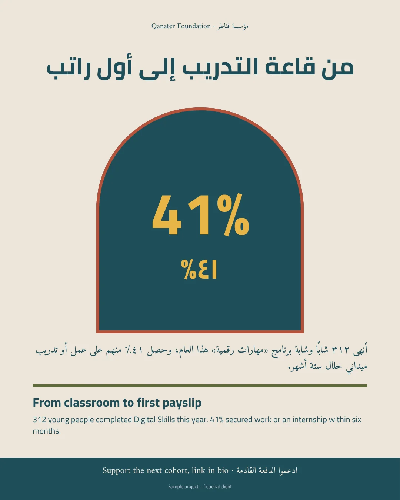
مؤسسة قناطر — الملصق
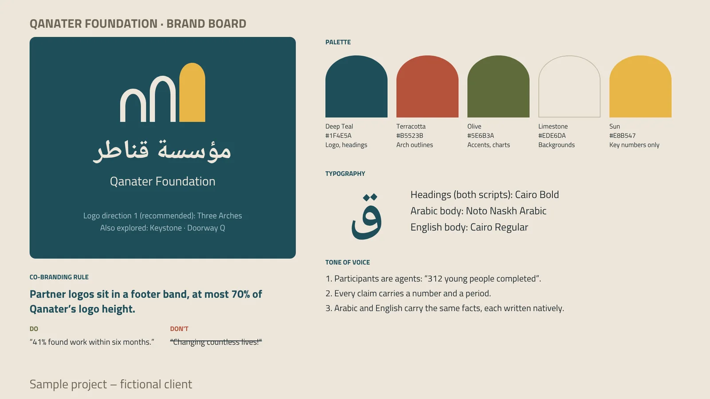
مؤسسة قناطر — لوحة الهوية — الشعار والألوان والخطوط ونبرة الصوت
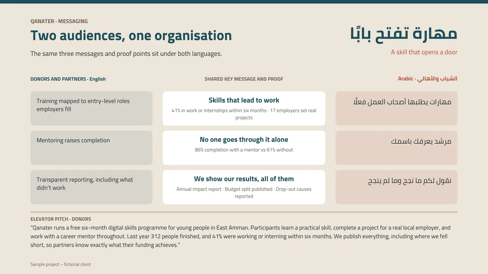
مؤسسة قناطر — إطار الرسائل — جمهوران ومؤسسة واحدة
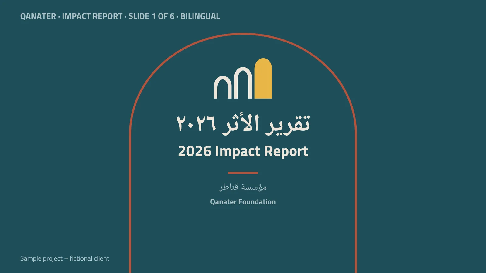
مؤسسة قناطر — تقرير الأثر ثنائي اللغة لعام ٢٠٢٦ — الشريحة 1 من 6
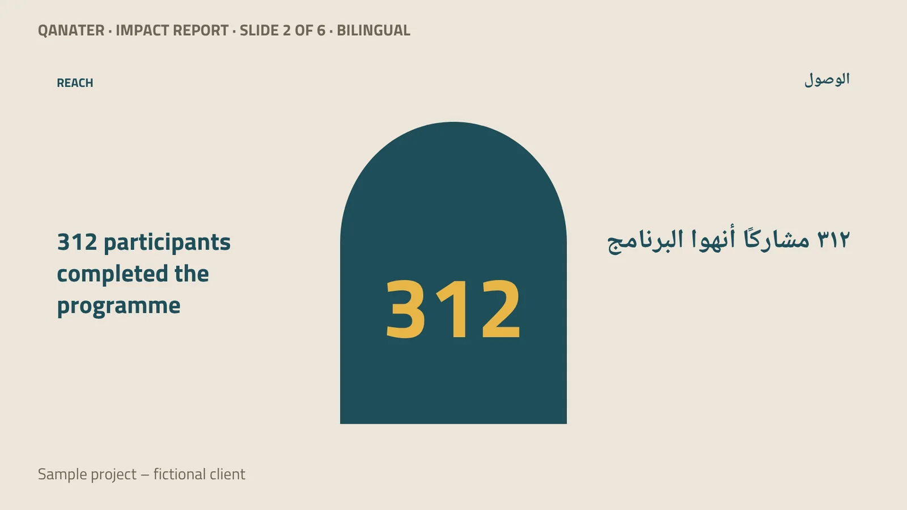
مؤسسة قناطر — تقرير الأثر ثنائي اللغة لعام ٢٠٢٦ — الشريحة 2 من 6
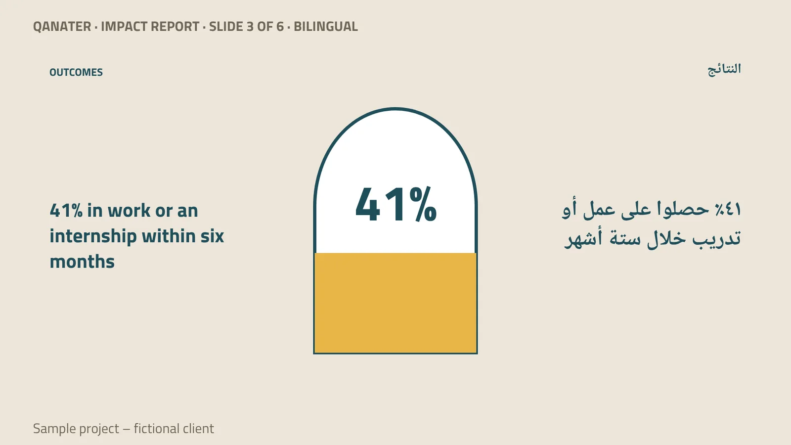
مؤسسة قناطر — تقرير الأثر ثنائي اللغة لعام ٢٠٢٦ — الشريحة 3 من 6
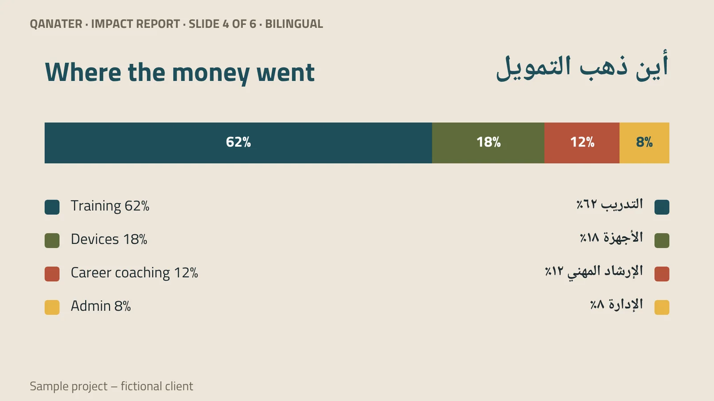
مؤسسة قناطر — تقرير الأثر ثنائي اللغة لعام ٢٠٢٦ — الشريحة 4 من 6
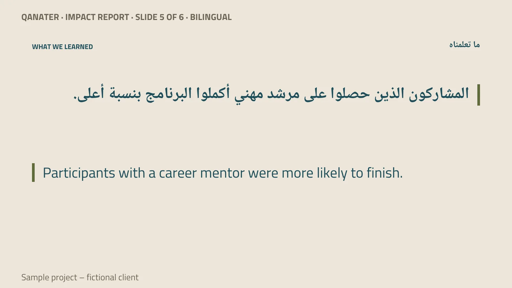
مؤسسة قناطر — تقرير الأثر ثنائي اللغة لعام ٢٠٢٦ — الشريحة 5 من 6
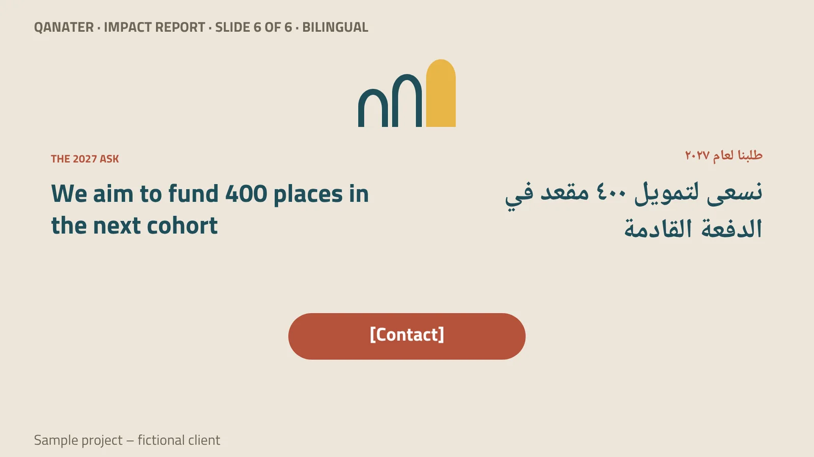
مؤسسة قناطر — تقرير الأثر ثنائي اللغة لعام ٢٠٢٦ — الشريحة 6 من 6
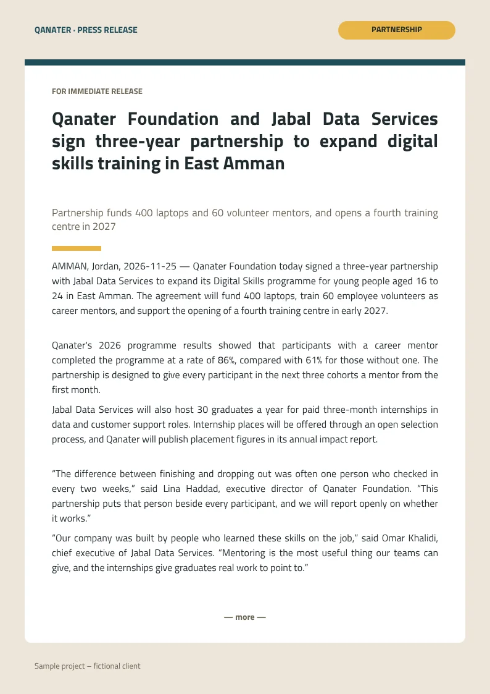
مؤسسة قناطر — بيان صحفي — شراكة تدريبية لثلاث سنوات (الصفحة 1 من ٢)
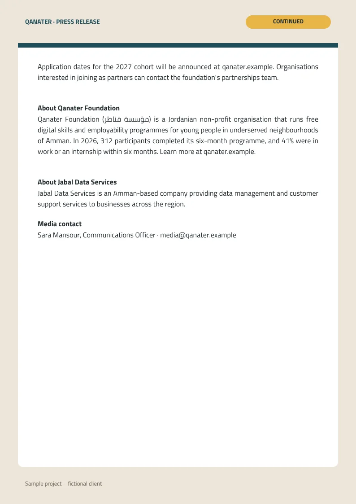
مؤسسة قناطر — بيان صحفي — شراكة تدريبية لثلاث سنوات (الصفحة 2 من ٢)
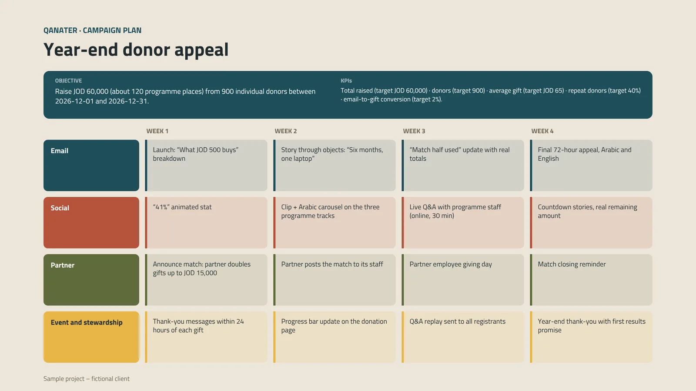
مؤسسة قناطر — تقويم الحملة — نداء المانحين في نهاية العام
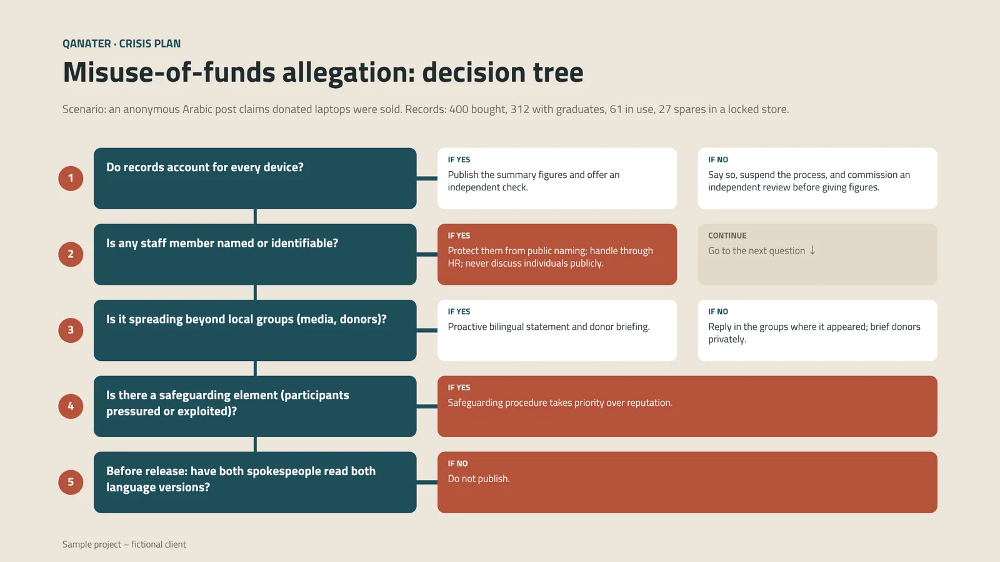
مؤسسة قناطر — خطة الأزمات — ادعاء بإساءة استخدام الأموال: شجرة القرار
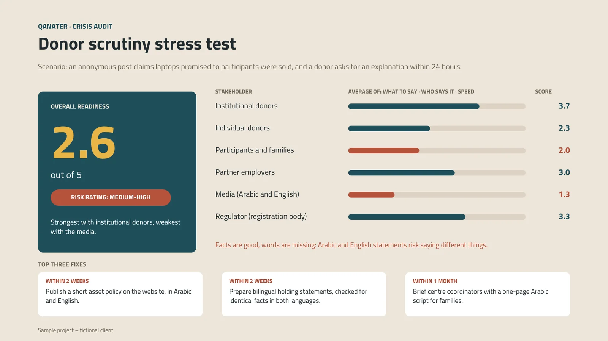
مؤسسة قناطر — تدقيق الاتصال — اختبار الجاهزية لتدقيق المانحين
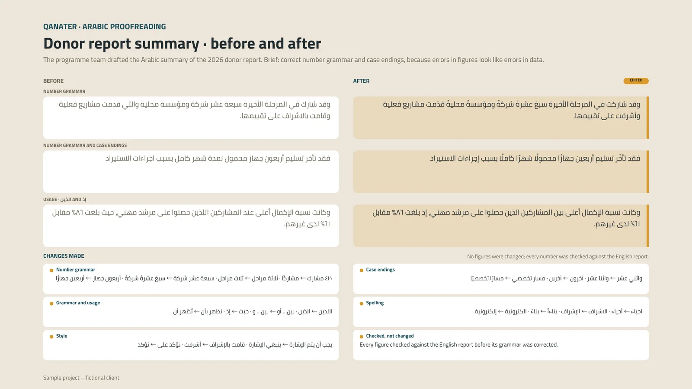
مؤسسة قناطر — التدقيق اللغوي العربي — ملخص تقرير المانحين قبل التدقيق وبعده
متصفحك لا يدعم تشغيل الفيديو.
مؤسسة قناطر — إحصائية متحركة — ٤١٪ حصلوا على عمل أو تدريب
متصفحك لا يدعم تشغيل الفيديو.
مؤسسة قناطر — فيديو طولي — ستة أشهر من قاعة التدريب إلى أول راتب